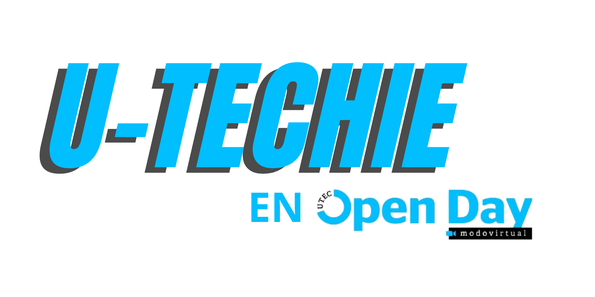

Ir al Inicio
UTECHIE - THE GAME

Descarga aqui
el codigo fuente
Descomprime el archivo ZIP y abrelo en Unity Hub
IMPORTANTE: Instalar la version 2022.3.49f1 de Unity
Si las texturas no cargan completamente, se recomienda instalar el paquete Universal RP